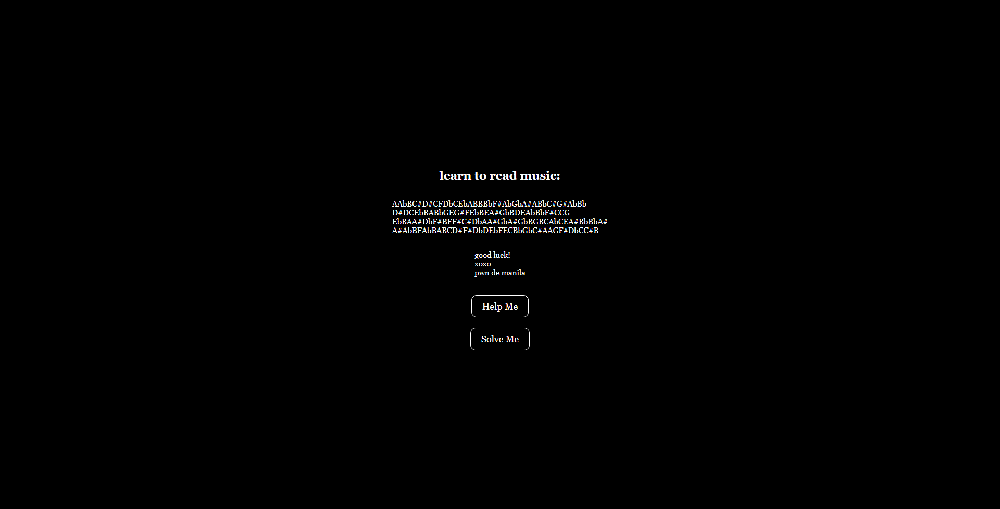
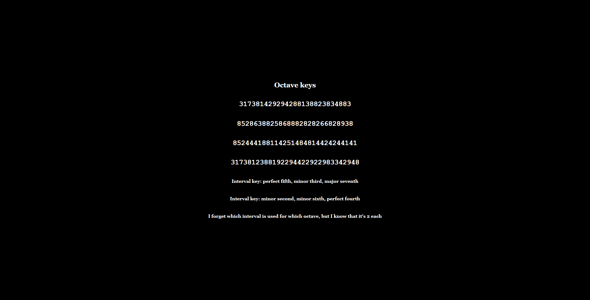

jebidiah-anthony
write-ups and what not
[WEB500] Classical Music
PART 1 : CHALLENGE DESCRIPTION
It reads:
The bakery loves to play music as customers shop our pastries. But we like putting a little extra into what music we play. Can you piece together the subliminal messages? 45.77.255.198
PART 2 : GIVEN INFORMATION
There are three things that were given for this challenge:
First is a series of notes when opening the web application:
I cleaned it up a bit and it looks like this:
A Ab B C# D# C F Db C Eb A B B Bb F# Ab Gb A# A Bb C# G# Ab Bb D# D C Eb B A Bb G E G# F Eb B E A# Gb B D E Ab Bb F# C C G Eb B A A# Db F# B F F# C# Db A A# Gb A# Gb B G B C Ab C E A# Bb Bb A# A# Ab B F Ab B A B C D# F# Db D Eb F E C Bb Gb C# A A G F# Db C C# B
Next is a series of keys that will probably be used to decipher the subliminal messsages (as described in the challenge description):

Octave keys 317381429294288138823834883 8528638825868882828266828938 852444188114251484814424244141 3173812388192294422922983342948 Interval key: perfect fifth, minor third, major seventh Interval key: minor second, minor sixth, perfect fourth I forget which interval is used for which octave, but I know that it's 2 each
And lastly is how to decipher the subliminal messages using the information above:
There are 12 notes per octave in a 12TET, which means we can properly fit the entire alphanumeric range within three octaves. We’ve made it that the digits follow the letters. Each character is represented by a note in the octave. For example, the default arrangement is that letter A corresponds to note C, letter B to C# or Db, C to D, etc. Then the notes start repeating once you reach the letter M, so now letter M is note C, N is C#, etc. And you go all the way until you’re done with the numbers as well.
It wouldn’t be much of a cipher if we just stopped here. We wanted it to be more complex. We can change the arrangement by transposing the notes in all three blocks by a select interval. Let’s say the first block is being transposed by a major second (2 semitones, in keeping with the musical theme). That means that letter A now corresponds to note D, letter D# or Eb, C to E, etc. The same applies to the other two blocks.
But why stop there? We also had the other two blocks not only be transposed, but also modulated. That is to say, after they have been offset by the "transposition" interval (major second) I add the "modulation" intervals for each block.
For the second block let’s pick a minor third, which makes that 5 semitones (2 + 3) from C to F. Remember, the first block is offset only by the transposition interval, but we start at the F note on the second. Now, the letter M (first letter of the second block) is F, N is F# or Gb , O is G, etc. The same principle applies to the third block: If the second modulation (offset interval for the third block) is a fifth (7 semitones above; 2 + 7 = 9; 9 semitones from C is A), then letter Y (first letter of the third block) is A, Z is A# or Bb, (now we’re starting with numbers) number 0 is B, 1 is C, etc. The three musical intervals (transposition, first modulation and second modulation) make up the *interval* key used to decode the cipher.
Next up are the octaves which determine which of the notes correspond to which letter/number. Each block has its own starting octave, and octave numbers always begin with the C note. If we were to transpose a piece starting at B1 (the last note in the first octave) by a perfect fifth higher (7 semitones) then the next 7 notes belong to the higher octave (C2, C#2, D2, D#2, E2, F2 and F#2). In this case, our transposed piece now starts with F#2. The most important thing to remember is that octaves start with the letter C#, therefore the octave number will always become one higher every time we reach the next C.
The starting octave for each block is the first part of the *octave* key. This is represented by the leading three-digit number of the octave key, where the first digit is the octave number for the first block, the second digit for the second block and the third digit for the third block. The rest of the trailing octave numbers in the octave key correspond to each of the notes in the ciphertext.
As an added challenge, we decided to reverse the flow of notes for one of the lines.
PART 2 : GENERATING THE KEYS
In summary,
We have three blocks (octaves) at the beginning to represent alphanumeric characters:
Block 1 C C# D D# E F F# G G# A A# B A B C D E F G H I J K L Block 2 C C# D D# E F F# G G# A A# B M N O P Q R S T U V W X Block 3 C C# D D# E F F# G G# A A# B Y Z 0 1 2 3 4 5 6 7 8 9
Using the first octave key given — 317381429294288138823834883, it says that the 3 leading numbers are the octave for each block so in this case we will use 317:
Block 1 C C# D D# E F F# G G# A A# B 3 3 3 3 3 3 3 3 3 3 3 3 A B C D E F G H I J K L Block 2 C C# D D# E F F# G G# A A# B 1 1 1 1 1 1 1 1 1 1 1 1 M N O P Q R S T U V W X Block 3 C C# D D# E F F# G G# A A# B 7 7 7 7 7 7 7 7 7 7 7 7 Y Z 0 1 2 3 4 5 6 7 8 9
Next is that the first block will be transposed by a select interval, the second block will be transposed and then modulated (block1 transposition + block2 modulation), and the same goes with the third block (block1 transposition + block3 modulation)
If we use the first given interval key — perfect fifth, minor third, major seventh, the first block will be transposed to the right by a perfect fifth (7 semitones), the second block by modulating by a minor third (7 + 3 semitones), and the third block by modulating by a major seventh (7 + 11 semitones).
Applying this to the three blocks above:
If we have:
C C# D D# E F F# G G# A A# B C C# D D# E F F# G G# A A# B 0 1 2 3 4 5 6 7 8 9 10 11 12 13 14 15 16 17 18 19 20 21 22 23 Perfect Fifth = 7 semitones Minor Third = 3 semitones Major Seventh = 11 semitonesThen:
INTERVAL| STANDARD | Transposed by a perfect fifth BLOCK#1 | C C# D D# E F F# G G# A A# B | G G# A A# B C C# D D# E F F# OCTAVE | 3 3 3 3 3 3 3 3 3 3 3 3 | 3 3 3 3 3 4 4 4 4 4 4 4 VALUE | A B C D E F G H I J K L | A B C D E F G H I J K L --------|--------------------------------------|-------------------------------------- INTERVAL| STANDARD | By a perfect fifth + minor third BLOCK#2 | C C# D D# E F F# G G# A A# B | A# B C C# D D# E F F# G G# A OCTAVE | 1 1 1 1 1 1 1 1 1 1 1 1 | 1 1 2 2 2 2 2 2 2 2 2 2 VALUE | M N O P Q R S T U V W X | M N O P Q R S T U V W X --------|--------------------------------------|-------------------------------------- INTERVAL| STANDARD | By a perfect fifth + major seventh BLOCK#3 | C C# D D# E F F# G G# A A# B | F# G G# A A# B C C# D D# E F OCTAVE | 7 7 7 7 7 7 7 7 7 7 7 7 | 8 8 8 8 8 8 9 9 9 9 9 9 VALUE | Y Z 0 1 2 3 4 5 6 7 8 9 | Y Z 0 1 2 3 4 5 6 7 8 9
There were only 2 sets of octave blocks given — it was 317 and 852. The same goes for interval keys; only two were given `perfect fifth, minor third, major seventh and minor second, minor sixth, perfect fourth
Applying the respecitve octave keys given to the respective interval keys, we get:
OCTAVE KEY :
317
INTERVAL KEY :perfect fifth, minor third, major seventh| Transposed by a perfect fifth | By a perfect fifth + minor third | By a perfect fifth + major seventh | |--------------------------------------|--------------------------------------|--------------------------------------| | G G# A A# B C C# D D# E F F# | A# B C C# D D# E F F# G G# A | F# G G# A A# B C C# D D# E F | | 3 3 3 3 3 4 4 4 4 4 4 4 | 1 1 2 2 2 2 2 2 2 2 2 2 | 8 8 8 8 8 8 9 9 9 9 9 9 | |--------------------------------------|--------------------------------------|--------------------------------------| | A B C D E F G H I J K L | M N O P Q R S T U V W X | Y Z 0 1 2 3 4 5 6 7 8 9 |OCTAVE KEY :
852
INTERVAL KEY :minor second, minor sixth, perfect fourth| Transposed by a minor second | By a minor second + minor sixth | By a minor second + perfect fourth | |--------------------------------------|--------------------------------------|--------------------------------------| | C# D D# E F F# G G# A A# B C | A A# B C C# D D# E F F# G G# | F# G G# A A# B C C# D D# E F | | 8 8 8 8 8 8 8 8 8 8 8 9 | 5 5 5 6 6 6 6 6 6 6 6 6 | 2 2 2 2 2 2 3 3 3 3 3 3 | |--------------------------------------|--------------------------------------|--------------------------------------| | A B C D E F G H I J K L | M N O P Q R S T U V W X | Y Z 0 1 2 3 4 5 6 7 8 9 |
The generated keys above from the octave and interval keys above are only an assumption up to this point since it was also mentioned that the interval keys are each used for two of the octave keys and it wasn’t stated which ones does. However, it wouldn’t be much of a problem since the transposition of notes remains the same and only the octave in which they belong will change.
It was also stated that for one of the octave keys, the flow of notes were reversed so it will be something that will be tackled later on in this writeup.
PART 3 : DECIPHERING THE "SUBLIMINAL MESSAGES"
Using the keys generated above:
OCTAVE KEY :
317| Transposed by a perfect fifth | By a perfect fifth + minor third | By a perfect fifth + major seventh | |--------------------------------------|--------------------------------------|--------------------------------------| | G G# A A# B C C# D D# E F F# | A# B C C# D D# E F F# G G# A | F# G G# A A# B C C# D D# E F | | 3 3 3 3 3 4 4 4 4 4 4 4 | 1 1 2 2 2 2 2 2 2 2 2 2 | 8 8 8 8 8 8 9 9 9 9 9 9 | |--------------------------------------|--------------------------------------|--------------------------------------| | A B C D E F G H I J K L | M N O P Q R S T U V W X | Y Z 0 1 2 3 4 5 6 7 8 9 |OCTAVE KEY :
852| Transposed by a minor second | By a minor second + minor sixth | By a minor second + perfect fourth | |--------------------------------------|--------------------------------------|--------------------------------------| | C# D D# E F F# G G# A A# B C | A A# B C C# D D# E F F# G G# | F# G G# A A# B C C# D D# E F | | 8 8 8 8 8 8 8 8 8 8 8 9 | 5 5 5 6 6 6 6 6 6 6 6 6 | 2 2 2 2 2 2 3 3 3 3 3 3 | |--------------------------------------|--------------------------------------|--------------------------------------| | A B C D E F G H I J K L | M N O P Q R S T U V W X | Y Z 0 1 2 3 4 5 6 7 8 9 |
It could be mapped out using the remaining numbers from the octave keys and the notes given from the landinge page:
A Ab B C# D# C F Db C Eb A B B Bb F# Ab Gb A# A Bb C# G# Ab Bb 317 3 8 1 4 2 9 2 9 4 2 8 8 1 3 8 8 2 3 8 3 4 8 8 3 D# D C Eb B A Bb G E G# F Eb B E A# Gb B D E Ab Bb F# C C G 852 8 6 3 8 8 2 5 8 6 8 8 8 2 8 2 8 2 6 6 8 2 8 9 3 8 Eb B A A# Db F# B F F# C# Db A A# Gb A# Gb B G B C Ab C E A# Bb Bb A# 852 4 4 4 1 8 8 1 1 4 2 5 1 4 8 4 8 1 4 4 2 4 2 4 4 1 4 1 A# Ab B F Ab B A B C D# F# Db D Eb F E C Bb Gb C# A A G F# Db C C# B 317 3 8 1 2 3 8 8 1 9 2 2 9 4 4 2 2 9 2 2 9 8 3 3 4 2 9 4 8
Which gives us the following strings:
A Ab B C# D# C F Db C Eb A B B Bb F# Ab Gb A# A Bb C# G# Ab Bb 317 3 8 1 4 2 9 2 9 4 2 8 8 1 3 8 8 2 3 8 3 4 8 8 3 ----------------------------------------------------------------------------- C 0 N G R 4 T 5 F R 1 3 N D Y 0 U D 1 D G 0 0 DD# D C Eb B A Bb G E G# F Eb B E A# Gb B D E Ab Bb F# C C G 852 8 6 3 8 8 2 5 8 6 8 8 8 2 8 2 8 2 6 6 8 2 8 9 3 8 ------------------------------------------------------------------------------- C R 4 C K 1 N G T H E C 3 D 2 F 3 R T H 2 F L 4 GEb B A A# Db F# B F F# C# Db A A# Gb A# Gb B G B C Ab C E A# Bb Bb A# 852 4 4 4 1 8 8 1 1 4 2 5 1 4 8 4 8 1 4 4 2 4 2 4 4 1 4 1 -------------------------------------------------------------------------------------- ? ? ? ? A F ? ? ? ? ? ? ? F ? F ? ? ? ? ? ? ? ? ? ? ?A# Ab B F Ab B A B C D# F# Db D Eb F E C Bb Gb C# A A G F# Db C C# B 317 3 8 1 2 3 8 8 1 9 2 2 9 4 4 2 2 9 2 2 9 8 3 3 4 2 9 4 8 ---------------------------------------------------------------------------------------- D 0 N T B 3 1 N 4 R U 5 H I T S 4 U 5 1 C A L P 4 G 3
It roughly translates to the following strings:
C0NGR4T5FR13NDY0UD1DG00D == (Congrats, friend! You did good) CR4CK1NGTHEC3D2F3RTH2FL4G == (cracking the code for the flag.) ????AF???????F?F??????????? D0NTB31N4RU5HITS4 U51CALP4G3 == (Don't be in a rush! It's a musical page.)
The third line was not even remotely decoded so it must be the one where the flow of notes was reversed.
PART 4 : THE REVERSED FLOW
If normal transposition is done by shifting to the right then maybe for this, we should transpose to the left.
The interval key, minor second, minor sixth, perfect fourth, has only deciphered one message so far so we will be using this when transposing with a reversed flow. The other one was used to decipher the first and fourth line.
So if we have:
C# D D# E F F# G G# A A# B C 11 10 9 8 7 6 5 4 3 2 1 0 Minor Second = 1 semitones Minor Sixth = 8 semitones Perfect Fourth = 5 semitonesThen:
INTERVAL| STANDARD | Transposed by a minor second BLOCK#1 | C C# D D# E F F# G G# A A# B | B C C# D D# E F F# G G# A A# OCTAVE | 8 8 8 8 8 8 8 8 8 8 8 8 | 7 8 8 8 8 8 8 8 8 8 8 8 VALUE | A B C D E F G H I J K L | A B C D E F G H I J K L --------|--------------------------------------|-------------------------------------- INTERVAL| STANDARD | By a minor second + minor sixth BLOCK#2 | C C# D D# E F F# G G# A A# B | D# E F F# G G# A A# B C C# D OCTAVE | 5 5 5 5 5 5 5 5 5 5 5 5 | 4 4 4 4 4 4 4 4 4 5 5 5 VALUE | M N O P Q R S T U V W X | M N O P Q R S T U V W X --------|--------------------------------------|-------------------------------------- INTERVAL| STANDARD | By a minor second + perfect fourth BLOCK#3 | C C# D D# E F F# G G# A A# B | F# G G# A A# B C C# D D# E F OCTAVE | 2 2 2 2 2 2 2 2 2 2 2 2 | 1 1 1 1 1 1 2 2 2 2 2 2 VALUE | Y Z 0 1 2 3 4 5 6 7 8 9 | Y Z 0 1 2 3 4 5 6 7 8 9
Now we can use this key to decipher the third line:
OCTAVE KEY :
852| Transposed by a minor second | By a minor second + minor sixth | By a minor second + perfect fourth | |--------------------------------------|--------------------------------------|--------------------------------------| | B C C# D D# E F F# G G# A A# | D# E F F# G G# A A# B C C# D | F# G G# A A# B C C# D D# E F | | 7 8 8 8 8 8 8 8 8 8 8 8 | 4 4 4 4 4 4 4 4 4 5 5 5 | 1 1 1 1 1 1 2 2 2 2 2 2 | |--------------------------------------|--------------------------------------|--------------------------------------| | A B C D E F G H I J K L | M N O P Q R S T U V W X | Y Z 0 1 2 3 4 5 6 7 8 9 |
Which finally gives us:
Eb B A A# Db F# B F F# C# Db A A# Gb A# Gb B G B C Ab C E A# Bb Bb A# 852 4 4 4 1 8 8 1 1 4 2 5 1 4 8 4 8 1 4 4 2 4 2 4 4 1 4 1 -------------------------------------------------------------------------------------- M U S 2 C H 3 P 5 W 1 T H T H 3 Q U 4 R 4 N T 2 T 2When cleaned up a bit:
MUS2CH3 P5W1THTH3QU4R4NT2T2 ---------------------------- MUS1CH3LP5W1THTH3QU4R4NT1N3 == (Music hels with the quarantine)
PART 5 : GETTING THE FLAG
This is a web challenge so I decided to try going to /mus1ch3lp5w1thth3qu4r4nt1n3 and it led me to this page: